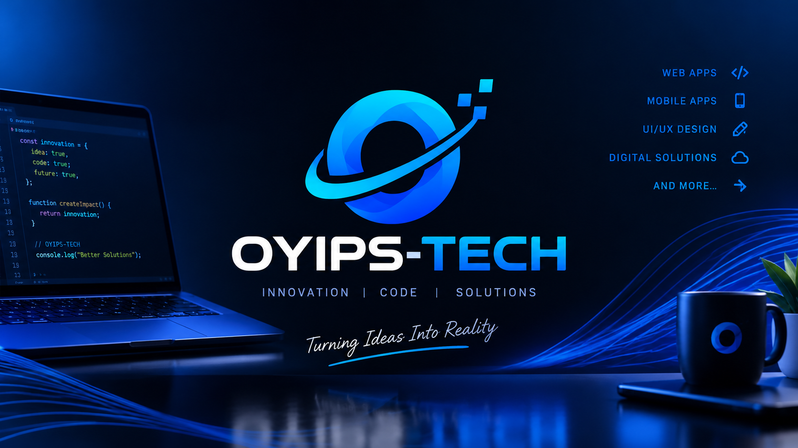
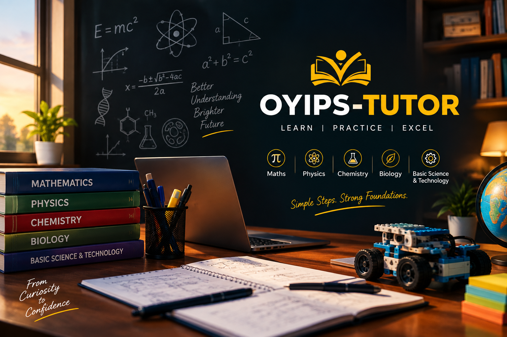

POETRY
Fate
A reflection on memory, loss, love and what remains when time begins to change what we once felt.
Read poem →WELCOME TO OYIPS
Oyips is a collection of the things I build, study, teach, analyse, question and create.
I have always been interested in understanding how things work. Sometimes that curiosity leads me to technology. Sometimes to mathematics, physics and data. Sometimes to teaching. And sometimes, it becomes a poem or a question about life.
I don't see these things as completely separate. They are different expressions of the same curiosity — the desire to understand, create and make sense of the world around me.
BUILDING WITH TECHNOLOGY
Technology is one of the ways I turn ideas into something that can actually work.
My journey through technology has taken me through software development, web applications, databases, automation and systems.
But for me, programming has never been only about writing code. I am interested in the problem behind the code — understanding the system, breaking the problem down and building something useful from it.
Oyips Tech is where I explore that side of me: building digital solutions, experimenting with technology and turning ideas into working systems.
Projects, websites, applications, experiments and other things I build will gradually be added here.

Build it. Test it. Understand it.
TEACHING & STEM

Understand it. Then explain it.
Teaching is another way I explore my curiosity — by helping someone else understand what I have learned.
Oyips Tutor is built around Mathematics, Science and STEM education.
I enjoy taking ideas that may initially look complicated and finding a way to make them understandable without removing the reasoning behind them.
Physics, mathematics, chemistry, biology, basic science and technology all become more interesting when we understand not just what happens, but why it happens.
This space will eventually contain lessons, educational resources, experiments, images, animations and videos.
Explore Oyips Tutor ↗DATA • MATHEMATICS • MODELLING
I like questions that cannot be answered properly by intuition alone.
This is where data comes in.
Oyip's Analysis is my space for exploring statistics, mathematics, data science, machine learning, modelling and the patterns hidden inside real-world problems.
My background in physics influences the way I approach analysis. I am interested in relationships between variables, uncertainty, assumptions, models and evidence.
“We let the data talk.” — Oyip's
Start with the problem, not the model.
Build a mathematical representation of what is happening.
Compare the model with evidence.
The goal is not just prediction. It is understanding.
WORDS • THOUGHTS • REFLECTIONS
Not everything I think needs to become a model or a program.
Some thoughts become words.
I write about people, memories, emotions, life, loss, uncertainty, love and the questions that sometimes have no clean mathematical answer.
Poetry gives me a different language for things that analysis cannot always quantify.
This is the quieter side of Oyips.
POETRY
A reflection on memory, loss, love and what remains when time begins to change what we once felt.
Read poem →